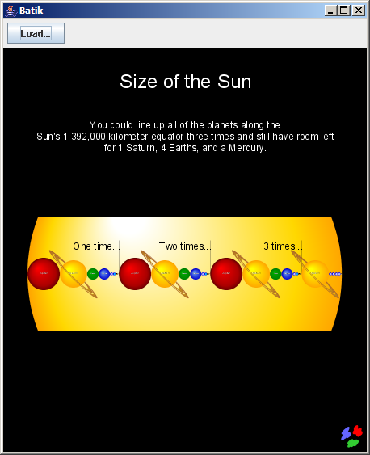

* **[ApacheCon NA](https://www.apachecon.com/)** Hope to see you there! ### ApacheCon Europe
* **[ApacheCon Europe](https://www.apachecon.com/)** Hope to see you there!
The goal of the Batik Swing component module is to provide a Swing component that can used to display SVG documents. With the JSVGCanvas class, you can easily display an SVG document (from a URI or a DOM tree) and allow the user to manipulate it, such as rotating, zooming, panning, selecting text or activating hyperlinks. First this document explains how to create a JSVGCanvas and integrate it in to a Swing application. Then, it descibes some advanced features such as the listener mechanism used to track all events that occurred while displaying or manipulating an SVG document.
The following example illustrates how to create a JSVGCanvas, which is a Swing component that follows the Swing design rule. This means that the component is not thread safe and all operations on the component or the document it is displaying must be performed as described in the Swing tutorial. The JSVGCanvas is also a JavaBean, so it can be used in visual application builders.
If you try this example, do not forget to set your CLASSPATH so that it contains the Batik classes and resources, as well as Xerces (lib/xerces_2_5_0.jar) and the XML APIs jars (lib/xml-apis.jar and lib/xml-apis-ext.jar).
import java.awt.*;
import java.awt.event.*;
import java.io.*;
import javax.swing.*;
import org.apache.batik.swing.JSVGCanvas;
import org.apache.batik.swing.gvt.GVTTreeRendererAdapter;
import org.apache.batik.swing.gvt.GVTTreeRendererEvent;
import org.apache.batik.swing.svg.SVGDocumentLoaderAdapter;
import org.apache.batik.swing.svg.SVGDocumentLoaderEvent;
import org.apache.batik.swing.svg.GVTTreeBuilderAdapter;
import org.apache.batik.swing.svg.GVTTreeBuilderEvent;
public class SVGApplication {
public static void main(String[] args) {
// Create a new JFrame.
JFrame f = new JFrame("Batik");
SVGApplication app = new SVGApplication(f);
// Add components to the frame.
f.getContentPane().add(app.createComponents());
// Display the frame.
f.addWindowListener(new WindowAdapter() {
public void windowClosing(WindowEvent e) {
System.exit(0);
}
});
f.setSize(400, 400);
f.setVisible(true);
}
// The frame.
protected JFrame frame;
// The "Load" button, which displays up a file chooser upon clicking.
protected JButton button = new JButton("Load...");
// The status label.
protected JLabel label = new JLabel();
// The SVG canvas.
protected JSVGCanvas svgCanvas = new JSVGCanvas();
public SVGApplication(JFrame f) {
frame = f;
}
public JComponent createComponents() {
// Create a panel and add the button, status label and the SVG canvas.
final JPanel panel = new JPanel(new BorderLayout());
JPanel p = new JPanel(new FlowLayout(FlowLayout.LEFT));
p.add(button);
p.add(label);
panel.add("North", p);
panel.add("Center", svgCanvas);
// Set the button action.
button.addActionListener(new ActionListener() {
public void actionPerformed(ActionEvent ae) {
JFileChooser fc = new JFileChooser(".");
int choice = fc.showOpenDialog(panel);
if (choice == JFileChooser.APPROVE_OPTION) {
File f = fc.getSelectedFile();
try {
svgCanvas.setURI(f.toURL().toString());
} catch (IOException ex) {
ex.printStackTrace();
}
}
}
});
// Set the JSVGCanvas listeners.
svgCanvas.addSVGDocumentLoaderListener(new SVGDocumentLoaderAdapter() {
public void documentLoadingStarted(SVGDocumentLoaderEvent e) {
label.setText("Document Loading...");
}
public void documentLoadingCompleted(SVGDocumentLoaderEvent e) {
label.setText("Document Loaded.");
}
});
svgCanvas.addGVTTreeBuilderListener(new GVTTreeBuilderAdapter() {
public void gvtBuildStarted(GVTTreeBuilderEvent e) {
label.setText("Build Started...");
}
public void gvtBuildCompleted(GVTTreeBuilderEvent e) {
label.setText("Build Done.");
frame.pack();
}
});
svgCanvas.addGVTTreeRendererListener(new GVTTreeRendererAdapter() {
public void gvtRenderingPrepare(GVTTreeRendererEvent e) {
label.setText("Rendering Started...");
}
public void gvtRenderingCompleted(GVTTreeRendererEvent e) {
label.setText("");
}
});
return panel;
}
}

Each time you set a URI or an SVG DOM tree to be displayed in a JSVGCanvas (using the setURI or setSVGDocument method), the specified document is first parsed (in case of a URI), built, rendered and optionally updated. The proper way to be notified of these different phases is to implement a listener and attach it to the component. There are five types of listener:
SVGDocumentLoaderListener
:
The SVGDocumentLoaderListener provides a set of methods that can be used to track SVGDocumentLoaderEvent events. It describes the loading phase: contructing an SVG DOM tree using an SVG file.
GVTTreeBuilderListener
:
The GVTTreeBuilderListener provides a set of methods that can be used to track GVTTreeBuilderEvent events. It describes the building phase: contructing a GVT (Graphics Vector Toolkit) tree using an SVG DOM tree. The GVT tree will then be used to render the document.
SVGLoadEventDispatcherListener
:
The SVGLoadEventDispatcherListener provides a set of methods that can be used to track SVGLoadEventDispatcherEvent events. It describes the DOM SVGLoad event dispatch phase.
This event is triggered only in dynamic documents.
GVTTreeRendererListener
:
The GVTTreeRendererListener provides a set of methods that can be used to track GVTTreeRendererEvent events. It describes the rendering phase: constructing an image using a GVT tree.
In dynamic documents this event is fired only once for the initial rendering.
UpdateManagerListener
:
The UpdateManagerListener provides a set of methods that can be used to track UpdateManagerEvent events. It describes the running phase: the update manager is started and then it can be suspended, resumed or stopped, and graphics updates can be tracked.
This event is triggered only in dynamic documents.
These listeners give a complete description of the different steps of the five phases (including error states). Adapter classes are available to ease the creation of new listener implementation— SVGDocumentLoaderAdapter, GVTTreeBuilderListenerAdapter, SVGLoadEventDispatcherAdapter, GVTTreeRendererAdapter and UpdateManagerAdapter,
For static documents, you can assume that the JSVGCanvas has completed its job (parsing, building and rendering) when the gvtRenderingCompleted method call is called, following a setURI or a setSVGDocument method call.
In the case of dynamic documents, the end of the computation (parsing, building, SVGLoad dispatch, initial rendering and updates) is marked by a call to the updateManagerStopped method.
The JSVGCanvas provides a set of build-in interactors that let the users manipulate the displayed document, including ones for zooming, panning and rotating. Interactors catch user input to the JSVGCanvas component and translate them into behaviour. If you want to add new behaviors to the JSVGCanvas, you can implement the Interactor interface. Then, you can register this new interactor to the component by adding an element to the List returned by the getInteractors() method of the canvas.
Copyright © 2016 The Apache Software Foundation, Licensed under
the Apache License, Version 2.0.
Apache, Apache XML Graphics, Apache FOP, Apache Batik, the Apache feather logo, and the
Apache XML Graphics logos are trademarks of The Apache
Software Foundation. All other marks mentioned may be trademarks or registered
trademarks of their respective owners.